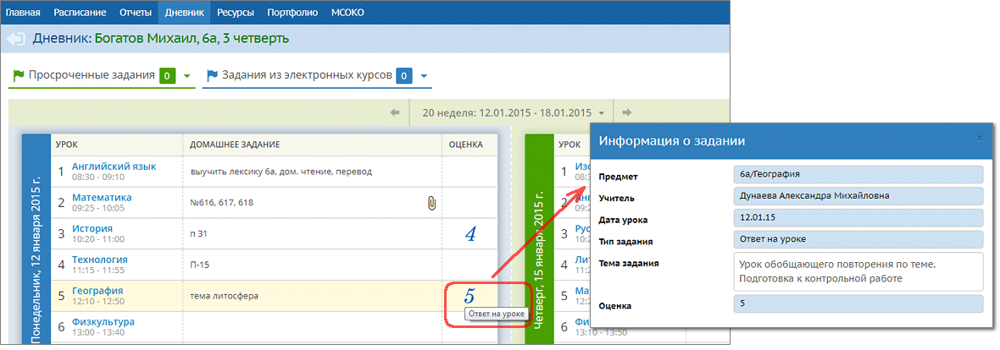
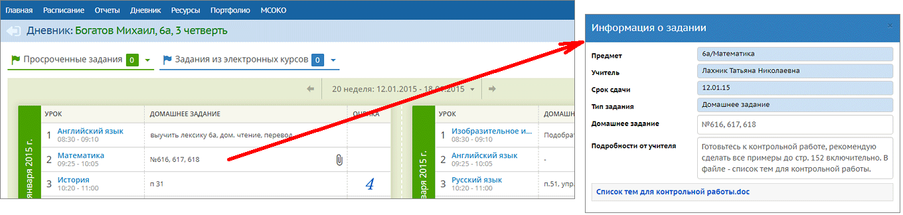
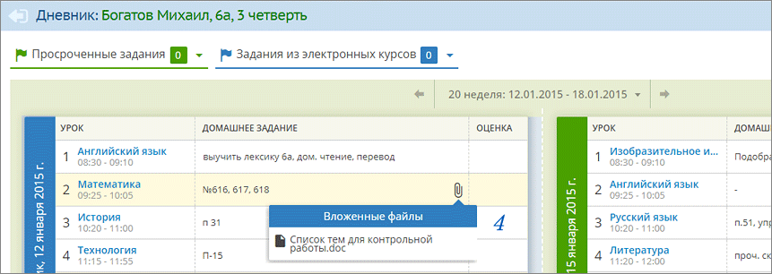
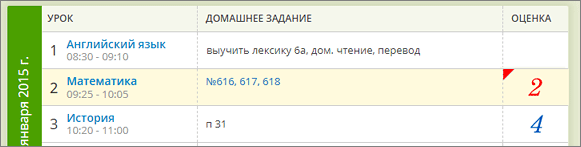
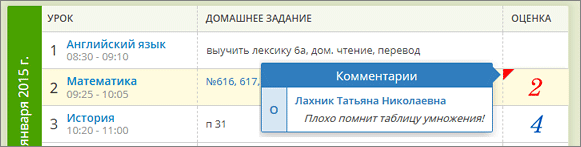
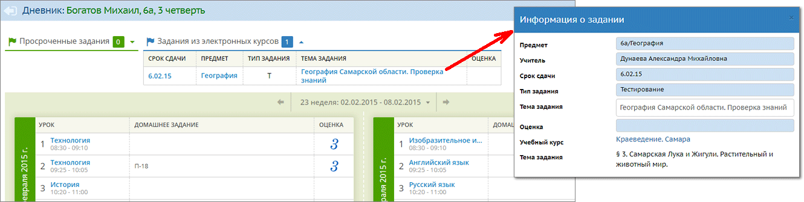
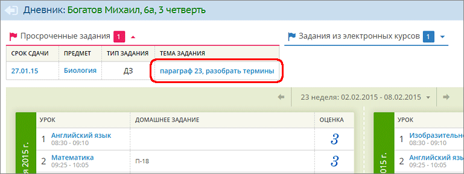
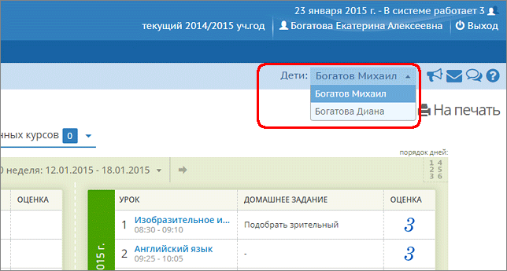

|
Дневник (для ученика и родителя)
|
| · | домашние задания независимо от наличия оценки;
|
| · | любые другие задания, за которые выставлена оценка или где есть задолженности ("точки").
|







